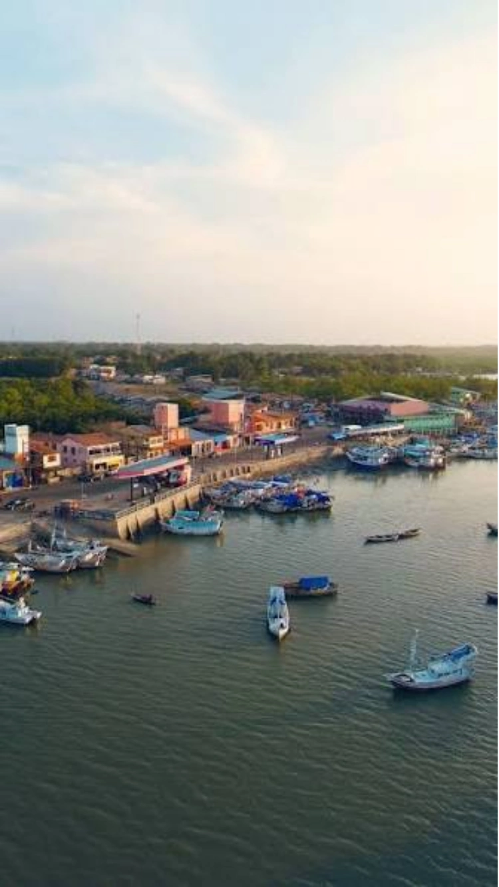
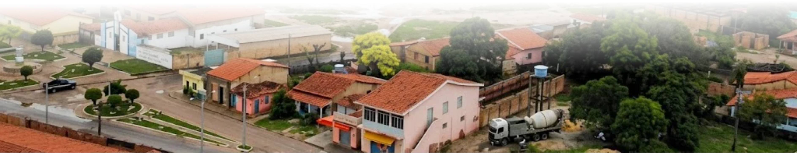

Em Andamento
VER DETALHES
Desperdício de água na avenida Nambu
Avenida Nambu • Relatado em 28/08/2026
Vazamento recorrente decorrente de torneiras e mangueiras abertas.
Acompanhe em tempo real os relatos dos moradores e a atuação da prefeitura em Apicum-Açu.
Avenida Nambu • Relatado em 28/08/2026
Vazamento recorrente decorrente de torneiras e mangueiras abertas.

Zona Costeira • Relatado em 15/08/2026
Retirada de resíduos flutuantes e plásticos no porto dos barcos.

Bairro Novo • Relatado em 02/09/2026
Trecho de 200m no escuro necessitando substituição de luminárias LED.